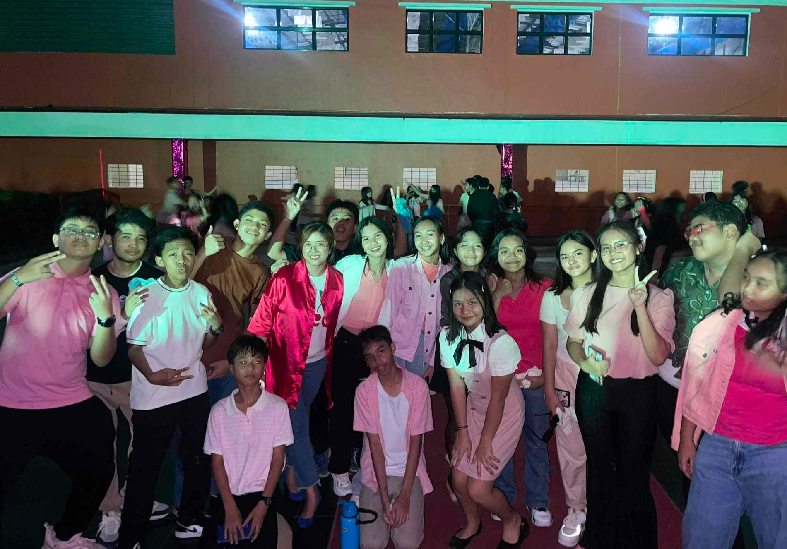
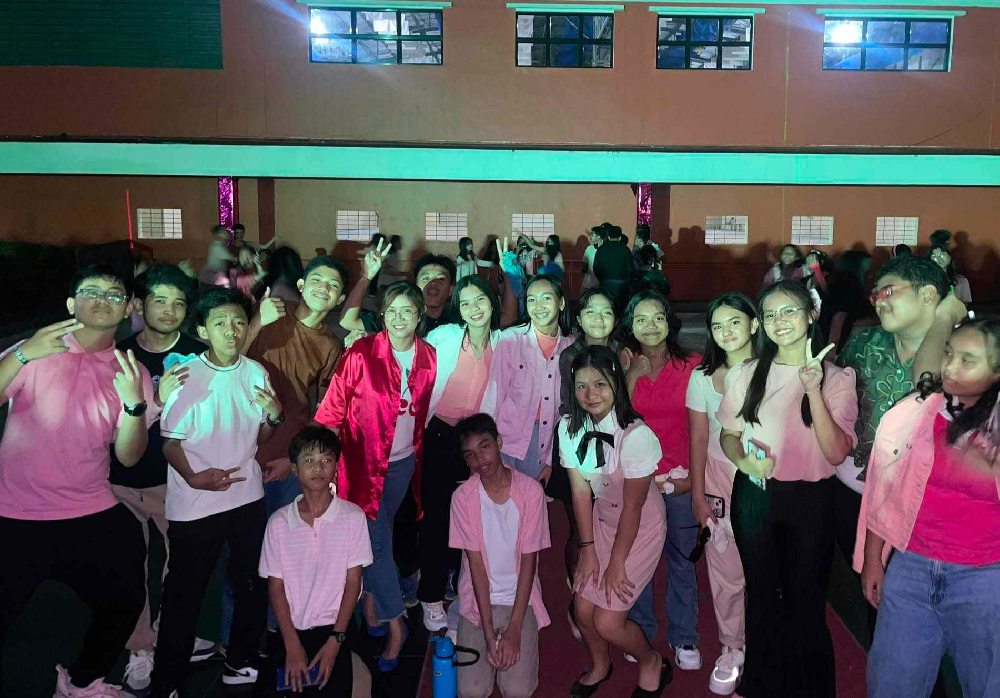
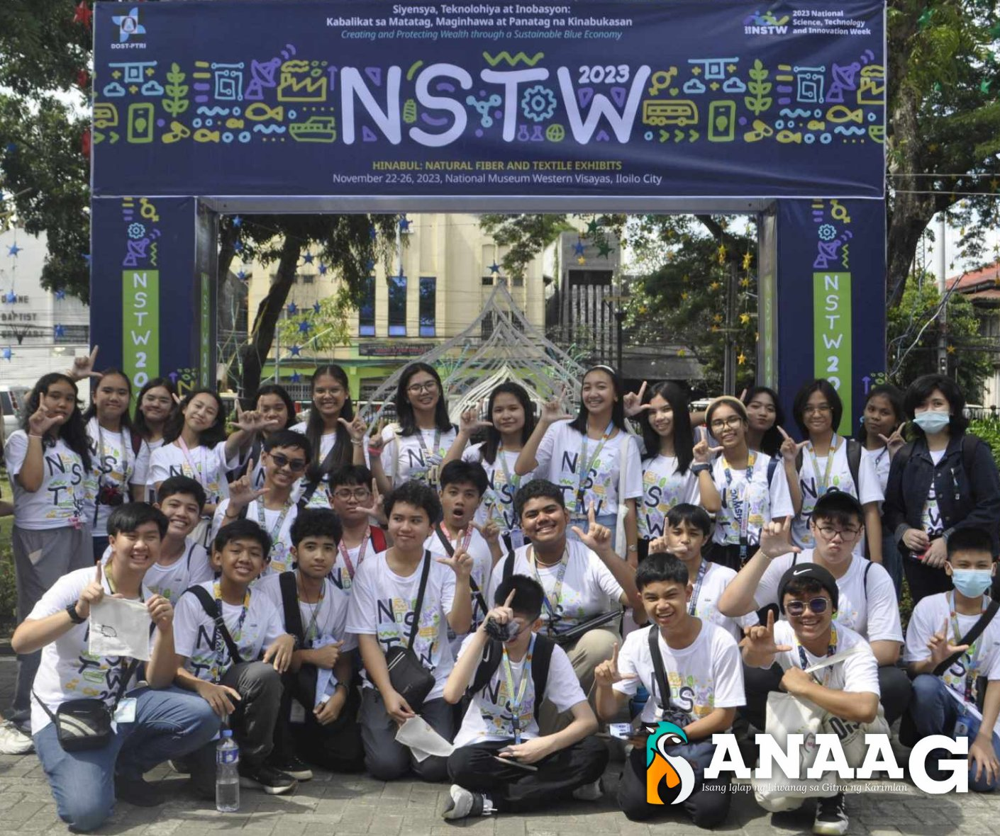
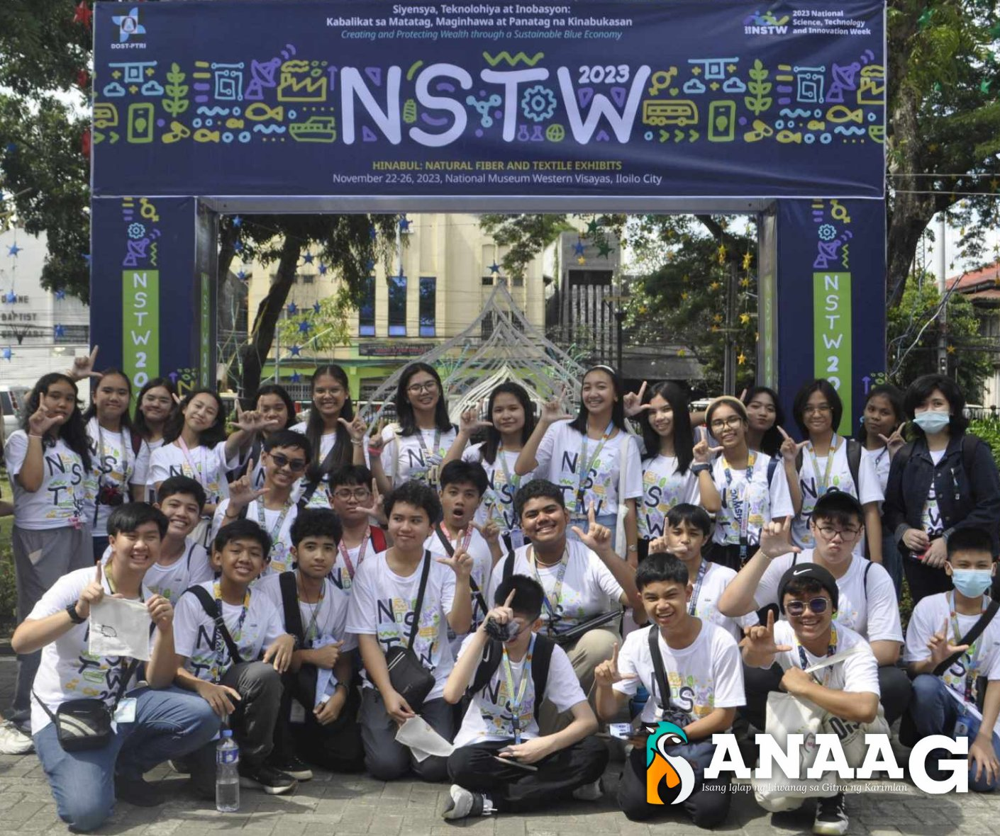

PISAY HAPPENINGS
Here's a short recap on the events that happend last 2023!
Last Thursday, November 30, 2023, was the first ever batch meeting of batch Astra. They started to plan out their plans for intrams 2K24.
They also decided on the team captains for the different sports. Everyone in our batch has at least one sport to play. We are all excited for the intramurals, we are excited to win.

AKWE 2K23!! Everyone had the best time during this event. The freshies showcased their acting skills in the Star in a Piso part. Of course, everyone partied and enjoyed themselves with their friends.


NSTW!! This 4 day event was held in region 6 and PSHS-WVC participated. All the batches participated in a STEM tour around Iloilo City. Everyone enjoyed it with their respective buddies and friends.

Buwan ng Wika!! This happened during the first week of school, some scholars wore their traditional Filipino attires and even won awards for the best costume. A play was also shown to the G7-G10 scholars.


Buwan ng Wika!! This happened during the first week of school, some scholars wore their traditional Filipino attires and even won awards for the best costume. A play was also shown to the G7-G10 scholars.